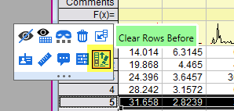
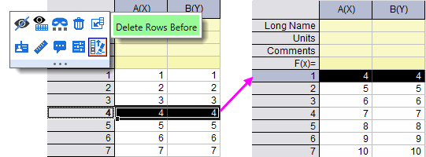

FAQ-1101 Wie lege ich eine Zeile als Beginn meiner Daten fest?
set-as-begin
Letztes Update: 21.10.2021
Origin 2020b und älter
- Wählen Sie die Arbeitsblattzeile.
- Klicken Sie mit der rechten Maustaste und wählen Sie im Kontextmenü Als Anfang festlegen.
Zellen oberhalb der ausgewählten Zeile werden geleert, aber die Zeilen werden nicht gelöscht.
Origin 2021, 2021b
In Origin 2021 2021 und 2021b wird Als Anfang festlegen im Kontextmenü verborgen, wenn Sie mit der rechten Maustaste auf eine Zeile klicken.
Wenn Sie eine Zeile als den Beginn Ihrer Daten festlegen möchten, verwenden Sie bitte die Schaltfläche Zeilen leeren vor auf der Minisymbolleiste, wenn Sie eine Zeile auswählen:
- 
 |
Wenn Sie die Option Als Anfang festlegen weiterhin über das Kontextmenü verwenden möchten, setzen Sie @SAB = 1, um das Menü zurückzubringen.
Um @SAB = 1 zu setzen:
- Wählen Sie Einstellungen: Systemvariablen im Menü.
- Geben Sie im Dialog Systemvariablen festlegen SAB in Variable ein und setzen Sie den Wert auf 1.
Einzelheiten zu @SAB lesen Sie in der Liste der Systemvariablen.
|
Origin 2022 und neuer
In Origin 2022 wird die Schaltfläche Zeilen leeren vor auf der Minisymbolleiste zur Schaltfläche Zeilen löschen vor. Beim Löschen der Arbeitsblattzeilen wird die ausgewählte Zeile im Arbeitsblatt nach oben verschoben.
- 
Beachten Sie, dass der obige "Tipp" zum Wiederherstellen des Kontextmenübefehls Als Anfang festlegen (mit Systemvariable @SAB) auch für die neuesten Versionen der Software gilt.
Schlüsselwörter:als Anfang festlegen, 2021, 2021b, 2022, Zeilen löschen vor, Zeilen leeren vor